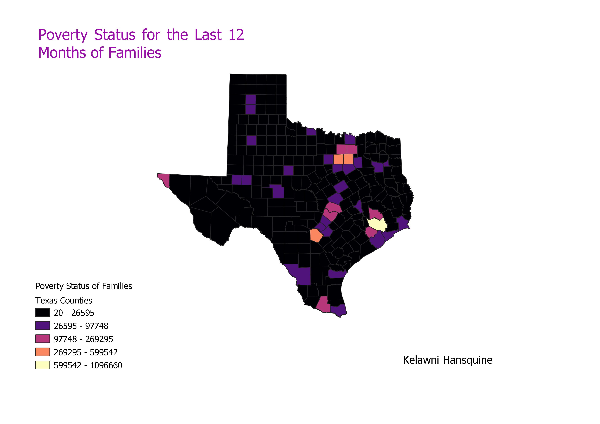

== $0
Texas Poverty
Homework 7: Census data choropleth
Kelawni Hansquine
This map shows the poverty levels of families in Texas. The majority of the counties have less than 26,595 impoverished families, though a few of them have between 26,595-269,295 families in poverty. One county has above 599,542.

Data used for this project
Link to cleaned CSV dataset
Texas Counties
Link to geojson